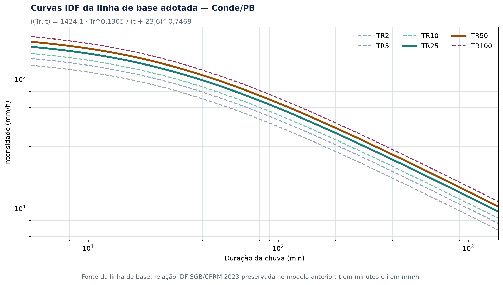
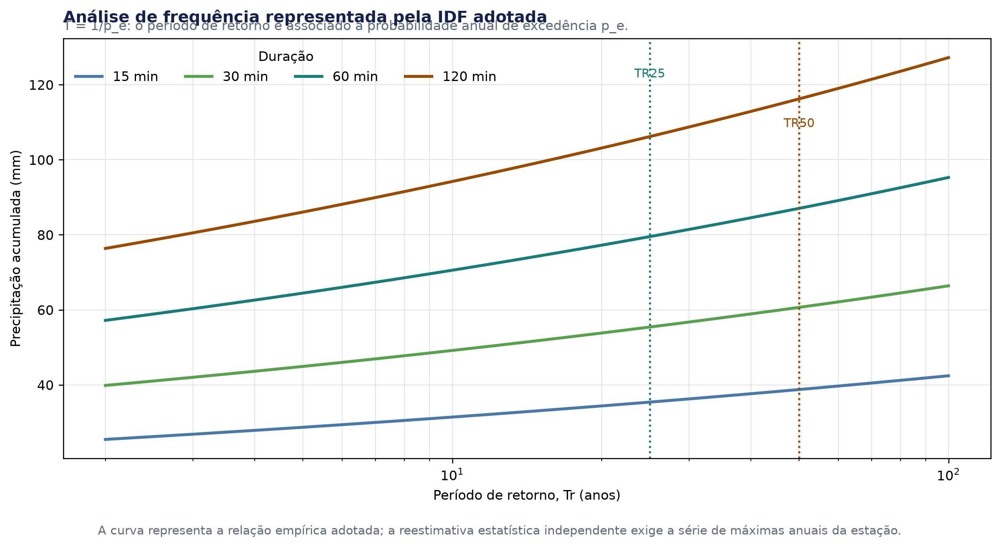
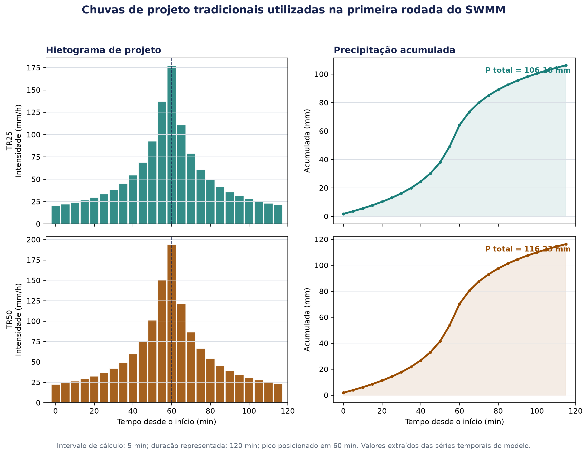

3. Estudos hidrológicos
3.1 Linha de base tradicional
A linha de base preliminar utiliza:
- estação INMET 82798;
- relação IDF SGB/CPRM 2023;
- hietogramas de projeto TR25 e TR50;
- método de infiltração CN-SCS;
- CN médio preliminar igual a 79;
- 30% de impermeabilização como premissa inicial.
As chuvas foram copiadas para 04_CHUVAS_PROJETO e incorporadas aos arquivos .inp preliminares. Esses parâmetros são hipóteses de concepção e deverão ser conferidos com uso do solo, cadastro de pavimentação, quadras, áreas permeáveis e observações de campo.
A transformação de chuva em vazão é tratada como uma cadeia de decisões, e não como a aplicação isolada de um coeficiente. A sequência adotada é: (i) selecionar a fonte e a chuva de projeto; (ii) converter a relação IDF em uma série temporal; (iii) separar perdas e armazenamento nas áreas de contribuição; (iv) transformar a chuva efetiva em escoamento superficial; e (v) propagar o escoamento pela rede de nós, condutos, dissipadores e exutórios. Essa estrutura é compatível com a organização hidrológica do USDA-NRCS e com a arquitetura do SWMM ([5], [19], [20]).
- Chuva de projeto: a IDF fornece a intensidade média associada a uma duração e a um período de retorno.
- Temporalização: o acumulado é distribuído em intervalos de 5 minutos, preservando o hietograma documentado.
- Perdas: o CN-SCS, a impermeabilização e os parâmetros de armazenamento representam a parcela que não se converte imediatamente em escoamento.
- Transformação: cada subárea é representada como um reservatório superficial não linear, com entrada de chuva, infiltração, evaporação, armazenamento e saída.
- Propagação: o escoamento é roteado pelos links do SWMM até os dissipadores e exutórios, permitindo verificar capacidade, remanso, sobrecarga e continuidade.
Essa separação permite identificar qual resultado decorre da chuva, do uso do solo, da geometria da subárea ou da rede. Também evita interpretar uma vazão preliminar como se fosse uma medição de campo ou um dimensionamento executivo.
3.2 Equação IDF adotada
A relação intensidade–duração–frequência usada na linha de base é:
([14]; relação legada preservada no estudo anterior).
em que i é a intensidade média da chuva, em mm/h; Tr é o período de retorno, em anos; e t é a duração, em minutos. Os parâmetros 1424,1, 0,1305, 23,6 e 0,7468 são os coeficientes da relação preservada no modelo anterior. A precipitação acumulada correspondente é:
com P em milímetros. A conversão é necessária porque a IDF fornece intensidade média na duração, enquanto o SWMM recebe uma série temporal de chuva.
Na forma funcional, a é o coeficiente de escala, b controla a dependência do período de retorno, c desloca a duração para representar o comportamento nas chuvas curtas e d controla o decaimento da intensidade com a duração. Esses parâmetros não são parâmetros do SWMM: são coeficientes estatísticos da relação de chuva intensa. Nesta concepção, foram preservados por rastreabilidade do estudo anterior; a série original e a memória de ajuste ainda precisam ser anexadas para que se determinem, de forma independente, intervalo de confiança, p-valor e qualidade do ajuste.

| Duração | TR25: intensidade | TR25: precipitação | TR50: intensidade | TR50: precipitação |
|---|---|---|---|---|
| 5 min | 177,16 mm/h | 14,76 mm | 193,93 mm/h | 16,16 mm |
| 15 min | 141,61 mm/h | 35,40 mm | 155,02 mm/h | 38,76 mm |
| 30 min | 110,82 mm/h | 55,41 mm | 121,32 mm/h | 60,66 mm |
| 60 min | 79,52 mm/h | 79,52 mm | 87,05 mm/h | 87,05 mm |
| 120 min | 53,09 mm/h | 106,18 mm | 58,12 mm/h | 116,23 mm |
| 360 min | 25,49 mm/h | 152,93 mm | 27,90 mm/h | 167,40 mm |
| 720 min | 15,55 mm/h | 186,57 mm | 17,02 mm/h | 204,23 mm |
| 1440 min | 9,38 mm/h | 225,03 mm | 10,26 mm/h | 246,34 mm |
Os valores de 120 minutos são coerentes com o total das séries temporais tradicionais preservadas no modelo: aproximadamente 106,18 mm no TR25 e 116,23 mm no TR50. A tabela completa, com TR2, TR5, TR10, TR25, TR50 e TR100, está disponível no CSV da IDF de linha de base.
3.3 Análise de frequência e interpretação dos períodos de retorno
O período de retorno é interpretado pela relação:
em que p_e é a probabilidade anual de excedência do evento de referência. Assim, TR25 corresponde a uma probabilidade anual de excedência de 4% e TR50 a 2%, sem significar que o evento ocorrerá exatamente uma vez a cada 25 ou 50 anos. Eventos podem ocorrer em anos consecutivos; o período de retorno é uma medida estatística de frequência.
Em uma análise de máximas anuais, cada ano contribui com o maior acumulado para a duração considerada. Se F é a distribuição de extremos ajustada, o quantil de projeto é o valor z_T cuja probabilidade de não excedência é 1 - 1/T_R. Essa interpretação pressupõe que a amostra seja suficientemente homogênea e que a distribuição adotada represente o regime de extremos; quando há não estacionariedade climática, a hipótese de uma única distribuição fixa precisa ser explicitamente revista.

| Camada | O que foi determinado nesta concepção | Limite de interpretação |
|---|---|---|
| Relação IDF adotada | Intensidades e precipitações para diferentes Tr e t |
É uma relação já ajustada e herdada do estudo anterior |
| Série observada anual | Estação INMET 82798 como origem indicada da linha de base | A série completa de máximas anuais não está no pacote desta minuta; um novo ajuste independente não foi determinado |
| Cenários climáticos | Quantis diários por modelo, cenário e horizonte, agregados em P10, mediana e P90 | O banco consultado não contém, nesta tabela, a série subdiária necessária para uma IDF futura completa |
| Validação hidrológica | Comparação TR25/TR50 no SWMM e triagem de trechos | Áreas de contribuição, CN por subárea, cotas e saídas ainda estão em revisão |
Para uma atualização formal em projeto básico, a série de máximas anuais deverá ser auditada quanto a falhas, homogeneidade, extensão e independência. Em seguida deverão ser comparadas distribuições de extremos, como Gumbel e GEV, por máxima verossimilhança ou L-moments, com intervalos de confiança e testes de aderência. A IDF deverá ser reestimada para as durações usadas no SWMM e não apenas escalada a partir de máximas diárias.
3.4 Hietogramas de projeto utilizados no SWMM
O SWMM não recebe diretamente uma curva IDF; ele recebe uma série temporal de precipitação. Os hietogramas tradicionais foram preservados no arquivo chuvas_TR25_TR50_base_relatorio.txt e reproduzidos nas entradas TR25 e TR50 dos modelos preliminares.
Características documentadas:
- intervalo entre registros: 5 minutos;
- duração representada: 120 minutos;
- 24 intervalos de chuva;
- pico de intensidade no intervalo centrado em 60 minutos;
- intensidade máxima: 177,16 mm/h no TR25 e 193,93 mm/h no TR50;
- precipitação total: 106,18 mm no TR25 e 116,23 mm no TR50.
O total de cada série foi verificado pela soma:
P_total = soma(i_j x Delta t / 60)
em que i_j é a intensidade do intervalo j e Delta t é o passo de 5 minutos. A distribuição temporal é chamada aqui de hietograma tradicional preservado. Não é reclassificada automaticamente como método de Chicago, blocos alternados ou outra técnica, porque a memória original de construção da série não está disponível neste pacote.
O procedimento de conversão pode ser descrito por:
Quando a curva IDF é usada para obter os acumulados P_j, as diferenças sucessivas Delta P_j são as lâminas incrementais. Quando se parte de uma série já temporalizada, como a série tradicional preservada, o total é conferido diretamente por P_total = soma(i_j x Delta t / 60) e os pesos w_j registram a fração de chuva de cada intervalo. O Rain Gage do SWMM recebe, então, o horário, o valor de chuva e a unidade explicitamente identificados; a curva IDF, sozinha, não define a posição do pico no tempo.

Os dados intervalares estão disponíveis no CSV dos hietogramas TR25/TR50 e no arquivo de texto original das séries. Para cada novo cenário climático, a série temporal deverá conservar um identificador explícito, por exemplo BASE_TR25, BASE_TR50, SSP245_2040_TR25 ou SSP585_2060_TR50, sem sobrescrever a linha de base.
3.5 Áreas de contribuição e perdas
As 208 áreas disponíveis no modelo atual são um template Voronoi. Elas preservam a estrutura do SWMM, mas ainda não representam definitivamente quadras, lotes, sarjetas ou pontos de entrada.
Na revisão, cada subárea deverá receber:
| Grupo | Dados a confirmar |
|---|---|
| Geometria | área, largura característica e declividade |
| Superfície | frações impermeável e permeável |
| Infiltração | CN, perdas iniciais e parâmetros do método escolhido |
| Conexão | nó de entrada, caminho superficial ou ligação à galeria |
| Controle | origem da cota, ponto de saída e hipótese de contribuição |
A estrutura deve permitir distinguir a contribuição natural do terreno, a contribuição urbana concentrada e a contribuição captada pela rede.
Regra de aplicação por componente
| Componente | Linha de base principal | Verificação complementar | Indicadores observados |
|---|---|---|---|
| Coletores e bueiros | TR25 | TR50 | enchimento, velocidade, sobrecarga, nós de entrada e continuidade |
| Troncos principais | TR50 | TR25 | vazão de pico, nível, capacidade, remanso e continuidade da macrodrenagem |
| Dissipadores e saídas | TR50 | TR25 | vazão de chegada, velocidade, energia específica e proteção a jusante |
Essa regra não autoriza dimensionar cada trecho isoladamente. Todos os componentes devem ser verificados na cadeia chuva → área de contribuição → nó de entrada → coletor → tronco → dissipador/exutório → proteção a jusante. Um trecho pode ser adequado para sua vazão local e ainda assim pertencer a uma rede sem saída válida ou com transferência de risco.
3.6 Transformação chuva–vazão
No SWMM, a transformação não é reduzida ao método racional Q = C i A. O modelo representa cada subcatchment como uma unidade hidrológica com chuva, infiltração, evaporação, armazenamento superficial e escoamento para um nó. O balanço de água superficial pode ser resumido por:
em que d é a lâmina armazenada na superfície, i é a chuva incidente, e é a evaporação, f é a infiltração e q é a descarga superficial por unidade de área. A relação de descarga depende da largura hidráulica, da declividade, da rugosidade e da lâmina excedente; em forma proporcional, pode ser escrita como:
O coeficiente K representa a conversão de unidades, n é a rugosidade de Manning, W/A é a largura característica normalizada, S é a declividade e d_s é a profundidade de armazenamento. A formulação acima é uma forma resumida da rotina de reservatório não linear do SWMM e não deve ser usada para substituir a implementação do programa ([19]).
Depois da geração do escoamento, o roteamento na rede resolve a continuidade e a quantidade de movimento. Para o roteamento dinâmico, selecionado nos arquivos pela opção DYNWAVE, a forma unidimensional resumida das equações de Saint-Venant é:
Nessas equações, A é a área molhada, Q é a vazão, q_l é a contribuição lateral, H é a carga hidráulica, S_f é a perda por atrito e S_0 é a declividade do leito. O método considera, conforme a configuração e os dados fornecidos, efeitos de inércia, pressão, atrito, remanso, refluxo, sobrecarga e alagamento ([20]). Por isso, a vazão de pico e o diâmetro preliminar dependem da rede inteira, das condições de jusante e da sequência temporal da chuva.
O modelo deve ser avaliado por:
- balanço de massa entre precipitação, infiltração, armazenamento, escoamento e descarga;
- coerência entre tempo de concentração, duração da chuva e tempo de simulação;
- sensibilidade a CN, impermeabilização e largura característica;
- comparação entre TR25 e TR50;
- identificação de subáreas que concentram vazões nos troncos e dissipadores;
- verificação de eventuais transferências de pico entre componentes.
Nenhum resultado de vazão final deve ser apresentado como definitivo enquanto as áreas de quadras e as conexões topológicas permanecerem preliminares.
3.7 Atualização climática com NEX-GDDP-CMIP6
NEX-GDDP-CMIP6 significa NASA Earth Exchange Global Daily Downscaled Projections - Coupled Model Intercomparison Project Phase 6. Trata-se de um conjunto de projeções climáticas diárias produzidas pela NASA a partir de modelos globais do CMIP6, espacialmente reduzidas para uma grade de aproximadamente 0,25 grau, cerca de 25 km na ordem de grandeza local. A coleção oficial cobre o período histórico e projeções futuras nos cenários SSP1-2.6, SSP2-4.5, SSP3-7.0 e SSP5-8.5, associados a diferentes trajetórias de emissões e desenvolvimento socioeconômico ([6], [17]).
O downscaling da coleção NEX-GDDP-CMIP6 utiliza a abordagem BCSD (Bias-Correction Spatial Disaggregation), que combina correção de viés por mapeamento de quantis com desagregação espacial usando uma referência histórica. Essa etapa melhora a compatibilidade estatística e a escala de representação, mas não cria observações locais nem elimina a incerteza dos modelos. A NASA recomenda que os dados sejam utilizados com avaliação especializada e validação para aplicações de engenharia; uma célula de 0,25 grau não equivale a um pluviômetro ou à variabilidade de uma rua urbana ([6], [18]).
O banco disponibilizado para este projeto é uma extração temática da coleção: contém máximas diárias anuais por ponto de grade, modelo e cenário, com os cenários historical, ssp126, ssp245, ssp370 e ssp585. A documentação técnica atual da NASA descreve 35 modelos na versão oficial; o recorte local utilizado nesta concepção possui 34 modelos disponíveis. Essa diferença deve ser registrada e não pode ser ocultada por uma contagem genérica de modelos.
Para a célula g, o modelo m, o cenário c e o ano y, a tabela local representa a redução da série diária pela operação:
Essa máxima anual pode ser ajustada por uma distribuição de extremos e comparada entre a janela histórica e uma janela futura. Um fator de mudança exploratório é:
O fator deve ser agregado por p10, mediana e p90, sempre acompanhado da quantidade de modelos válidos e da janela temporal. Como a tabela local possui apenas máximas diárias anuais, ela não fornece, por si só, uma IDF subdiária nem um hietograma de 5 minutos. Nesta versão, a fonte operacional dos fatores de adaptação é o Portal IDF-MC da SEDEC/MIDR; o NEX-GDDP-CMIP6 funciona como fonte complementar de sensibilidade, comparação e rastreabilidade climática.
A segunda etapa deverá selecionar a célula mais próxima ou uma agregação espacial justificável e comparar:
- período histórico de referência;
- janelas futuras;
- modelos climáticos e medida de consenso;
- máximas anuais e quantis;
- viés entre o histórico modelado e a estação observada;
- transformação de máximas diárias em curvas de duração e frequência;
- efeito dos cenários sobre a chuva de projeto e o dimensionamento.
A conexão ao banco é somente leitura. O relatório deverá registrar consulta, célula, modelos, período, cenário, quantil, método de correção e versão do script. Não será aplicado um fator climático único sem justificar sua origem e sua faixa de incerteza.
3.8 Cenários hidrológicos propostos
| Cenário | Finalidade | Situação |
|---|---|---|
| TR25 tradicional | linha de base operacional | arquivo preliminar disponível |
| TR50 tradicional | verificação de maior recorrência | arquivo preliminar disponível |
| Histórico ajustado | comparação com observações e viés | próxima etapa |
| SSP126/245 | faixa de menor/intermediária emissão | segunda etapa |
| SSP370/585 | faixa de maior severidade climática | segunda etapa |
A atualização climática não substitui a linha de base: ela deve permitir enxergar como a rede responde quando as premissas de precipitação são alteradas.
3.9 Entregas hidrológicas
A etapa deverá produzir hietogramas, parâmetros de subáreas, arquivos .inp, tabela de vazões de pico e volumes, balanço de massa, comparação de cenários, premissas, scripts e relatório de incertezas. Quando uma grandeza não puder ser determinada, deverá ser registrada como null ou “não determinado”, sem preencher a lacuna por estimativa não documentada.
3.10 Detalhamento metodológico e rastreabilidade
Esta seção explicita a cadeia de decisão usada para que a chuva de projeto não apareça no modelo como um número isolado. A sequência adotada é:
fonte pluviométrica → série de máximas → análise de frequência → relação IDF → hietograma → transformação chuva–vazão → propagação hidráulica → indicadores de capacidade e risco.
Cada etapa tem uma fonte, uma hipótese e uma limitação. Essa separação é especialmente importante porque o estudo atual é uma concepção preliminar para instruir o Plano de Trabalho de Reconstrução; ele não substitui a investigação hidrológica e cadastral de um projeto básico.
3.10.1 Hierarquia das fontes e função de cada uma
| Fonte ou documento | Papel nesta concepção | Situação de uso |
|---|---|---|
| Estação INMET 82798 | Referência observacional indicada para a chuva local | A estação é identificada como origem da linha de base; a série bruta completa ainda não está anexada ao pacote |
| Relação IDF SGB/CPRM 2023 preservada no estudo anterior | Gera as intensidades da linha de base | Aplicada na primeira rodada; o documento primário e o ajuste original deverão ser anexados para auditoria completa |
| SNIRH/ANA — Curva Número na Base Ottocodificada | Apoia a espacialização inicial do CN 2022 | Recortado para A, B e A+B; não substitui o CN por quadra/subárea |
| USDA-NRCS — Stream Hydrology | Referência do método CN-SCS e da transformação de chuva em escoamento direto | Usado como referência conceitual; parâmetros locais ainda dependem de uso do solo e validação |
| EPA SWMM — documentação oficial | Define a implementação da chuva, subáreas, infiltração, nós, conduítes, saídas e roteamento | Aplicado nos arquivos .inp preliminares; os modelos continuam em validação |
| NASA NEX-GDDP-CMIP6 | Fornece a base em grade para testar a não estacionariedade climática | Usado como análise de sensibilidade diária; não é observação local |
| Maity e Maity (2022) | Referência para organizar IDFs futuras, correção de viés, extremos e incerteza | Inspira a segunda etapa; não são transferidos para Conde os coeficientes ou resultados do artigo |
| Nota técnica de IDF do RS, projeto local | Referência de estrutura, equações, análise de frequência e apresentação | Usada como inspiração de organização; os dados e parâmetros do RS não são usados em Conde |
As referências completas, com a classificação adotada, de apoio ou pendente de incorporação, estão no arquivo Referências e rastreabilidade da hidrologia e no Capítulo 8 — Referências e rastreabilidade metodológica. O arquivo também informa quais dados primários ainda precisam ser anexados para que a equação IDF possa ser reestimada de forma independente.
3.10.2 Relação IDF e análise de frequência
A forma funcional utilizada é a forma tradicional de quatro parâmetros:
Para a linha de base de Conde, os parâmetros preservados são a = 1424,1, b = 0,1305, c = 23,6 e d = 0,7468. A precipitação acumulada é obtida por P = i x t / 60. Portanto, a curva fornece uma intensidade média para uma duração e um período de retorno; ela não fornece, sozinha, a ordem temporal dos picos que o SWMM precisa receber.
Em uma reestimativa independente, a amostra deve ser montada por duração a partir das máximas anuais. Para cada duração t, a observação anual é o maior acumulado daquele ano nessa duração. A probabilidade anual de excedência é convertida em nível de retorno por:
onde F é a distribuição ajustada aos extremos. A linha de base desta minuta não executa novamente essa reestimativa porque a série observada completa e a memória do ajuste original não estão anexadas. Por isso, valores de R², p-valor, intervalo de confiança e teste de aderência da equação herdada devem ser tratados como não determinados nesta versão, e não como evidências de validação local.
Para o projeto básico, recomenda-se comparar pelo menos Gumbel e GEV, documentar o método de estimação — máxima verossimilhança, L-moments ou outro —, testar a sensibilidade ao período de dados e calcular intervalos de confiança por reamostragem. Também devem ser verificados falhas, anos incompletos, homogeneidade, mudanças de instrumento e independência dos máximos. A adoção de uma distribuição não deve ser decidida apenas pelo maior R² da regressão da IDF.
3.10.3 Método CN-SCS e atribuição às subáreas
O método de perdas configurado nos arquivos preliminares é CURVE_NUMBER, com referência conceitual do USDA-NRCS ([5]) e do produto CN 2022 da ANA/SNIRH ([3]). A formulação de referência é:
Em que S é a capacidade potencial de retenção, Ia é a abstração inicial, P é a precipitação acumulada e Q é o escoamento superficial direto, todos em milímetros. O CN aumenta quando cresce a impermeabilização ou diminui a capacidade de infiltração. A média espacial do CN 2022 fornece uma referência de ordem de grandeza, mas não deve ser aplicada sem revisão uniforme a todas as áreas: uma quadra, uma rua pavimentada, um lote permeável e uma área vegetada podem ter respostas muito diferentes.
Na próxima revisão, cada área de contribuição será relacionada a uma quadra ou conjunto hidrologicamente homogêneo, com área, largura característica, declividade, percentual impermeável, CN, nó de saída e justificativa cartográfica. As áreas Voronoi atualmente disponíveis são, portanto, uma estrutura de partida e não um levantamento definitivo das contribuições.
3.10.4 Conversão para chuva temporal e implementação no SWMM
Os arquivos .inp usam unidades de vazão em CMS, infiltração CURVE_NUMBER e roteamento dinâmico DYNWAVE, em consonância com a estrutura documentada pelo EPA SWMM ([4], [19], [20]). A chuva entra por um Rain Gage ligado a uma Time Series com passo de 5 minutos. Cada subárea é conectada a um nó de saída, e os nós são encadeados por conduítes até os trechos de tronco, dissipadores e exutórios.
Os principais controles de consistência são:
- conferir se o total do hietograma coincide com a integral das intensidades;
- conferir se todas as subáreas possuem um único nó de saída válido;
- conferir se o sentido dos conduítes acompanha a topografia e a rede lançada;
- verificar continuidade de massa, vazão de pico, volume, nível, velocidade, enchimento e sobrecarga;
- identificar nós com inundação, conduítes limitantes e saídas sem proteção;
- repetir a simulação para TR25 e TR50, mantendo os mesmos identificadores de rede;
- registrar a vazão de chegada nos dissipadores e a condição hidráulica imediatamente a jusante.
Assim, a chuva de TR25 será a linha de base dos coletores e bueiros, enquanto TR50 será a linha de base dos troncos principais e dissipadores. A verificação cruzada é obrigatória, pois a escolha do período de retorno é uma regra de projeto por componente, e não uma autorização para analisar trechos isoladamente.
3.10.5 Atualização climática: o que já foi feito e o que ainda falta
O NEX-GDDP-CMIP6 disponibiliza, no banco consultado, máximas diárias anuais por ponto, modelo, cenário e ano ([6]). A rotina atual ajusta uma GEV por máxima verossimilhança quando há amostra suficiente, calcula fatores futuro/histórico e resume os modelos por P10, mediana e P90. Esse produto é uma triagem de sensibilidade para extremos diários; ele ainda não é uma IDF futura subdiária pronta para dimensionamento.
Não foram declarados nesta versão como já executados: quantile mapping da série diária completa, pesos REA, ajuste independente com a série observada, desagregação validada para 5 minutos e hietogramas futuros calibrados. Esses elementos permanecem na metodologia de segunda etapa porque a tabela disponibilizada contém prec_max_anual, e não as séries diárias e subdiárias necessárias para reproduzi-los diretamente.
Para cada cenário futuro, o procedimento completo deverá:
- auditar a completude e a composição da amostra histórica e futura;
- comparar os quatro pontos de grade próximos ao centroide A+B;
- confrontar o histórico modelado com a estação observada;
- ajustar e validar os extremos, com intervalo de confiança;
- aplicar uma transformação subdiária ancorada na IDF local;
- gerar hietogramas identificados por cenário, horizonte e TR;
- executar o SWMM e converter a variação de chuva em indicadores de vazão, nível, enchimento e diâmetro preliminar.
O resultado deve ser apresentado como envelope de decisão — mínimo, mediana e máximo ou P10–P90, conforme a métrica — e não como previsão determinística. A faixa de incerteza informa a robustez da alternativa e orienta a adoção de folga, modularidade e possibilidade de ampliação na reconstrução resiliente.
3.10.6 Limitações e critérios para avançar ao projeto básico
Os resultados atuais são adequados para comparar alternativas, priorizar trechos e estruturar metas do Plano de Trabalho, desde que sejam identificados como preliminares. Antes de usar dimensões como especificação executiva, devem ser incorporados: série pluviométrica auditada, memorial da IDF, levantamento topográfico/cadastral, cadastro de pavimentação, áreas de contribuição revisadas, cotas de fundo, seção e material dos condutos, condições de jusante, verificação dos dissipadores e vistoria de campo.
O princípio adotado é de rastreabilidade: quando um dado não estiver disponível, ele permanece explicitamente como “não determinado”. Isso evita que uma hipótese preliminar — especialmente CN médio, largura de subárea, cota ou fator climático — seja confundida com medição ou parâmetro validado.
3.11 Referências metodológicas
As referências desta seção estão vinculadas às fontes primárias e aos arquivos de trabalho. A lista não pretende substituir a documentação original da equação IDF; ela registra o fundamento das escolhas feitas nesta minuta e orienta a complementação para o projeto básico.
- Agência Nacional de Águas e Saneamento Básico — SNIRH: Curva Número na Base Ottocodificada. Fonte do recorte CN 2022 usado como referência espacial.
- USDA-NRCS — National Engineering Handbook, Chapter 05: Stream Hydrology. Referência institucional para a relação entre chuva, escoamento, bacia e parâmetros hidrológicos.
- U.S. EPA — Storm Water Management Model (SWMM) e SWMM User’s Manual, Version 5.2. Referências para a estrutura do modelo, infiltração, subáreas, roteamento e relatórios.
- Rossman e Huber (2016) — SWMM Reference Manual Volume I: Hydrology. Referência técnica para balanço superficial, reservatório não linear, infiltração e CN.
- Rossman (2017) — SWMM Reference Manual Volume II: Hydraulics. Referência técnica para roteamento e equações de Saint-Venant.
- NASA — NEX-GDDP-CMIP6 e Technical Note v2 do NEX-GDDP-CMIP6. Fonte e documentação da base climática em grade, com BCSD e cenários CMIP6.
- Thrasher et al. (2022), Scientific Data, e Thrasher et al. (2012), Hydrology and Earth System Sciences. Referências científicas da coleção e do mapeamento de quantis.
- Eyring et al. (2016), Geoscientific Model Development. Referência do desenho experimental e dos cenários do CMIP6.
- Maity, R.; Maity, A. (2022). Changing Pattern of Intensity–Duration–Frequency Relationship of Precipitation due to Climate Change. Water Resources Management, 36, 5371–5399. Referência de desenho metodológico para IDFs futuras e incerteza; não é fonte dos coeficientes de Conde.
- Pfafstetter, O. (1957). Chuvas intensas no Brasil. Referência histórica brasileira para relações de chuvas intensas, registrada na bibliografia da nota técnica de IDF usada como inspiração.
- INMET — dados históricos. Portal institucional para aquisição e conferência das séries observadas, quando a série primária da estação 82798 for anexada.
- Nota técnica de IDF do RS, arquivo local
idf_RS_Technical_Note2.qmd. Referência de organização, descrição de séries, análise de extremos e apresentação; resultados do Rio Grande do Sul não foram transplantados para Conde.